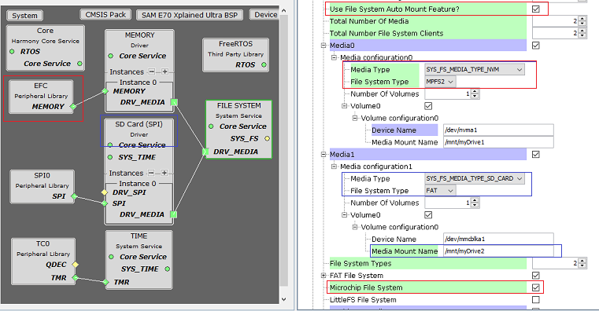
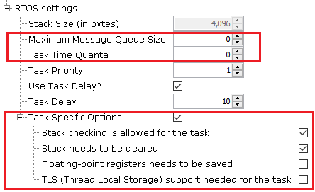

1.2.7.3 Configuring The Library
File System Service Library should be configured via MHC. The following figures show the MHC configuration window for File System Service and brief description.
File System configurations with Auto Mount disabled

File System configurations with Auto Mount Enabled
Configuration Options
Maximum Simultaneous File Access:
Maximum Number of files which can be accessed/opened by application
Size Of Block:
Block Size used by File System layer to chunk the application data and to send to attached media
Size Of Media Manager Buffer:
Media Manager Buffer size to store Block Data
Use File System Auto Mount Feature:
Enables auto mount feature for all the media's
Total Number Of Media:
Number of media to be attached to file system
Total Number Of File System Clients:
Number of clients to file system registered when Auto mount is enabled
Each of these client will receive a notfication on mount/unmount event for any media
Total Number Of Volumes:
Number of volumes to be created for each media
MediaX:
Media details to be configured when Auto mount feature is enabled.
These options will be used to populate the sysfsMountTable in initialization.c
Media ConfigurationX:
Media Type:
Specifies the media type to be mounted
File System Type:
Specifies the file system to be mounted for the selected media
Number Of Volumes
Number of volumes to be created for the selected media
VolumeX:
Volume ConfigurationX:
Volume details to be configured
Device Name:
Specifies the device name to be used for the media. Each media type has fixed names and will be auto-populated
Should always start with /dev/
Media Mount Name:
Specifies the unique volume mount name. This should be used by application while opening the file
Should always start with /mnt/
File System Types:
Number of file systems used in the application
FAT File System:
When Selected FAT File system will be used
Fat File System Version:
Specifies Fat-FS version currently Supported
Make FAT File System Read-Only:
When selected Fat-FS code is compiled with Read Only option enabled.
OEM Code Page to be Used:
Code page configuration to be used. Refer to ffconf.h for more details
Enable exFAT File System Support:
When selected exFAT support will be enabled in native file system code
Microchip File System:
When Selected MPFS File system will be used
LittleFS File System:
When Selected littleFS File system will be used
Make LittleFS File System Read-Only:
When selected littleFS code is compiled with Read only option enabled.
Size Of LFS image (in KB):
Specifies the size of the LFS image to be used
Enable Long File Name Support:
When selected Long file name support is enabled. This option is selected by default
If disabled, the file name length should follow the 8.3 format (Short file name)
File Name Length:
Max file name length to be supported
Current Working Directory Scratch buffer length in Bytes:
Buffer size to store the current directory path
Enable Cache Line Aligned Buffer for Cache Management
when enabled file system will use this aligned buffer to submit the request to Media if the input buffer for the read/Write operations is not aligned to Cache Line Size
Aligned Buffer Length in Multiple of 512 Bytes:
Specifies the length of the internal file system aligned buffer. Increasing the length of the buffer will increase the write throughput but consume more RAM memory
RTOS Settings:
These options will be enabled when any of the RTOS is added in MHC
Stack Size (in Bytes):
Specifies the stack size for the File system task/thread
The size can vary based on RTOS and should be configured based on application requirement
Task Priority:
Specifies the priority for the File system task/thread. The value can vary based on RTOS used
Use Task Delay?
When enabled the File system task will be scheduled out voluntarily after every run based on the delay configured.
Task Delay:
Specifies the duration the task has to go to sleep after every run.
Should be configured carefully based on the application need and number of task running along in the system
RTOS Settings For MicriumOS-III RTOS
Below additional options are visible in File Systems RTOS settings when the MicriumOS-III is added into project graph
Maximum Message Queue Size:
This argument specifies the maximum number of messages that the task can receive through internal message queue.
A MicriumOS-III task contains an optional internal message queue (if OS_CFG_TASK_Q_EN is set to DEF_ENABLED in os_cfg.h).
The user may specify that the task is unable to receive messages by setting this argument to 0
Task Time Quanta:
The amount of time (in clock ticks) for the time quanta when Round Robin is enabled.
If you specify 0, then the default time quanta will be used which is the tick rate divided by 10.
Task Specific Options:
Contains task-specific options. Each option consists of one bit. The option is selected when the bit is set.
The current version of MicriumOS-III supports the following options:
Stack checking is allowed for the task:
Specifies whether stack checking is allowed for the task
Stack needs to be cleared:
Specifies whether the stack needs to be cleared
Floating-point registers needs to be saved:
Specifies whether floating-point registers are saved.
This option is only valid if the processor has floating-point hardware and the processor-specific code saves the floating-point registers
TLS (Thread Local Storage) support needed for the task:
If the caller doesn�t want or need TLS (Thread Local Storage) support for the task being created.
If you do not include this option, TLS will be supported by default. TLS support was added in V3.03.00